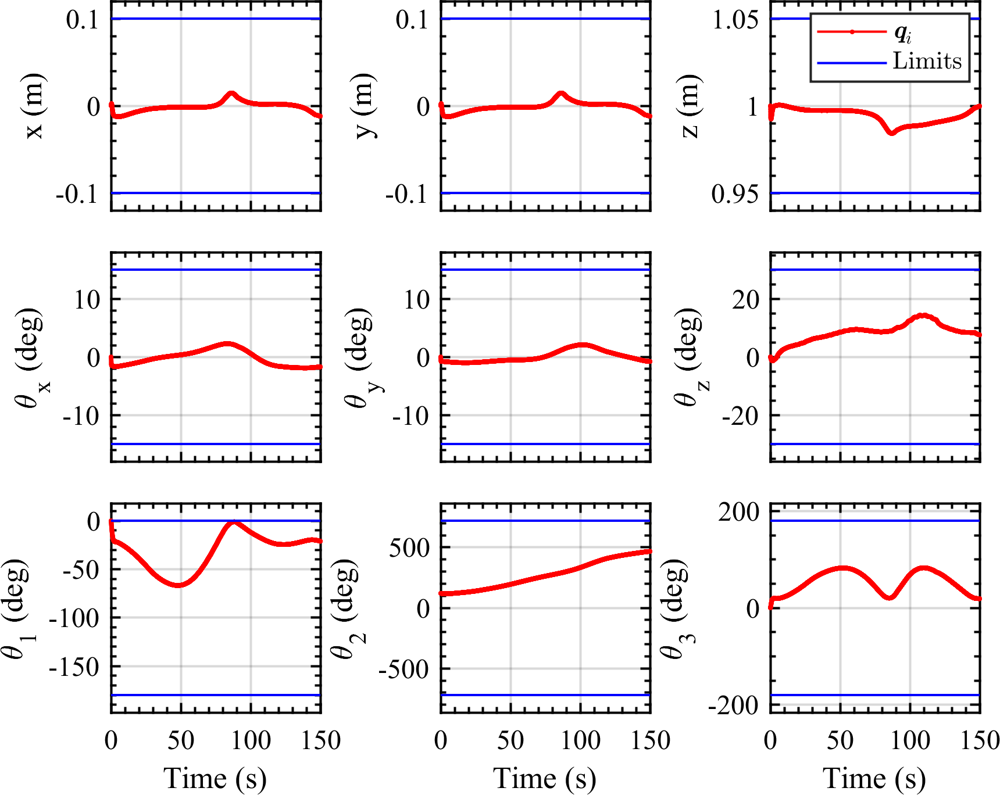

Anirudh Chhabra
Hardware-in-the-Loop Spacecraft Simulators
Develop a ground-based spacecraft simulator for hardware-in-the-loop simulations of on-orbit servicing missions.
Applications
Refueling, rendezvous, docking, capturing a tumbling object, etc.
Issues & Challenges
- Ensure high precision.
- Develop a low-cost solution.
- Demonstrate a wide range of motion.
- Avoid singularity issues.
Approaches & Results
Approach 1: Hybrid manipulator-based ground robotic platform for orbital motion emulation.
- It tracks a scaled-down orbital trajectory using a closed-loop inverse kinematics (CLIK) controller offering robustness against singularities and joint limits. [JAIS 2022], [ASC 2021]


Tracking the desired orbital trajectory while maintaining joint limit constraints.
Approach 2: Emulating In-Space Servicing, Assembly, and Manufacturing (ISAM) missions with a 12-DOF Hardware-in-the-loop robotic testbed.
- The system offers inherent modularity, allowing multiple use cases to emulate ISAM missions.
- Scenario 1: This configuration significantly enhances motion capabilities, particularly in translation and rotation, due to the system’s inherent kinematic redundancy. [ASC 2023]
- Scenario 2: Such a configuration is particularly valuable for testing control methods for traditional serial-link robotic arms in space missions, where the hexapod replicates 6 DOF satellite motion. [SFMM 2025]
Modularity of the HIL Simulator
Experimental Analysis of an ISAM Mission to dock a servicer spacecraft with a tumbling target satellite.
Experimental Analysis of an ISAM Mission to install a module in a tumbling target satellite.
More content to be added soon...